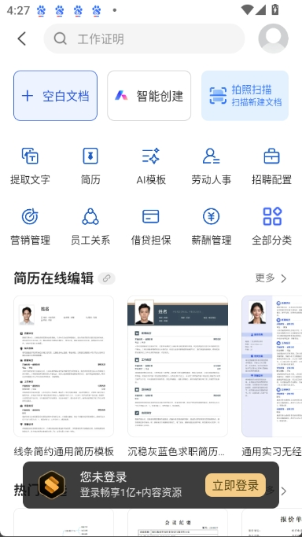
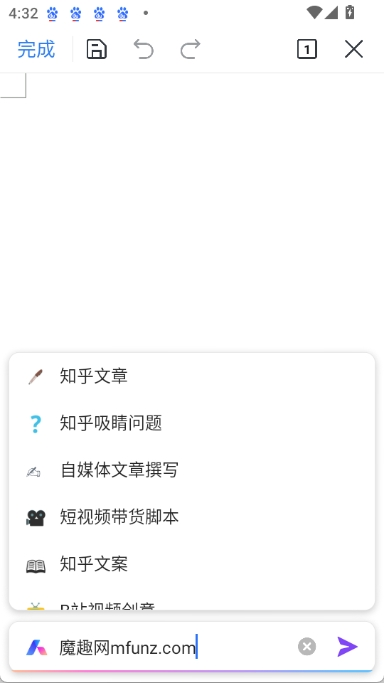

WPS AI 两年迭代复盘：从一句话生成到嵌进每一个右键菜单
从 2023 年金山办公首次发布会至今，WPS AI 走完了从"能写"到"好用"、从 PC 独占到全端覆盖的两轮关键迭代。
现在这版的样子：AI 已经不在某个角落，它在每一次选中和右键里
我最近打开 WPS 的第一感受是，AI 不再是一个"需要点进去才能用"的独立模块了。
以前我要写点什么，得先找到菜单栏那个 WPS AI 选项卡，点进去，等它加载完对话框，再把需求说一遍。现在不一样了——选中一段文字，右键菜单里直接跳出「AI 润色」「AI 翻译」「AI 扩写」；选中一组表格数据，右键就能「AI 数据分析」；甚至什么都不选，点一下界面右侧那个小图标，侧边栏就弹出来可以直接对话。
这种变化不是小修小补。它反映的是一个产品从"先把功能堆出来"到"重新想清楚用户到底在哪一步需要它"的阶段转换。而这个转换，花了 WPS AI 整整两轮大迭代。
起步：一个简单的写作助手，和一份云端架构决策
样本文档里没有写具体版本号，但从架构特征就能看出早期和现在的分界——wpsai官网上公开的技术演进记录也显示，WPS AI 从一开始就选择了云端运行。这不是随便的决定，而是金山办公当时最聪明的一步棋。
最早发布时，WPS AI 只有写作能力：输入一句话主题，生成一段初稿。功能单一得像个 demo，但底层已经把所有 AI 模型放在了云端服务器上。这么做的好处有三个：用户不用下载几百 MB 的模型包、模型可以持续更新而无需用户手动升级、PC 和移动端用的是同一个引擎。代价也很直接——断网就完全不能用。
我记得当时有同事问过：为什么不做本地模型？金山的回答大概是，办公场景对翻译、数据分析这些能力的需求，本地小模型撑不住。先把核心能力做出来、跑通，再想办法覆盖更多场景。
这个判断后来被验证了——云端架构让 WPS AI 在后续迭代中，翻译、公式生成、PPT 一键生成、Chat PDF 这些功能几乎是"接上云端就能用"，而不需要分别适配本地模型。
第一轮迭代：从"能写"到"写作三件套"
第一次明显的功能扩展，是把单一的"帮我写"拆成了三个功能：帮我写、伴写、续写。
这看起来像是把一个按钮拆成三个按钮，但背后的思考很深。写一篇文档其实有三个完全不同的阶段：不知道怎么开头（需要一个完整初稿）、正在写但偶尔卡壳（需要逐句续写）、已经写完一段想批量往后加（需要一次性多段生成）。早期只给一个"帮我写"，相当于用同一种工具对付三种不同的痛。
拆完之后，三个功能各有定位：
| 功能 | 解决的问题 |
|---|---|
| AI 帮我写 | 从主题生成大纲初稿，解决"不知道怎么开头" |
| AI 伴写 | 逐句实时续写，Tab 采纳，解决"写着写着卡壳" |
| AI 续写 | 选中文字批量生成后续多段，解决"想批量延伸" |
我自己的典型用法是：开篇先让帮我写出框架，手动改完结构，然后逐段用伴写填细节，某个模块写完了就用续写批量扩写，最后再跑一遍帮我改做润色。四步走完，效率提升真的不是一点点。
同一轮迭代里，翻译能力也补上了。翻译嵌在文档里这点其实比功能本身更重要——以前翻译要复制粘贴五六个窗口，现在选中文字右键点一下，译文直接出现在侧边栏。而且因为翻译引擎和写作引擎都在云端，翻译完可以直接让 AI 帮你把译文改得更地道，两个能力无缝联动。
第二轮迭代：入口爆炸，从 PC 独占到全端覆盖
如果说第一轮迭代是"把核心功能做深"，第二轮就是"把入口铺到用户每一个可能用 AI 的地方"。
现在 WPS AI 有三种主要入口：菜单栏选项卡、右侧 AI 侧边栏、右键快捷调用。三种入口覆盖了三类场景——第一次用想知道有什么功能、需要多轮灵活对话、已经选中了具体内容想就地处理。
这种多入口设计其实有个潜台词：AI 功能本身已经稳定了，团队开始解决"怎么让用户真正用起来"的问题。一个功能再强，如果藏得太深，用户还是会回去用老办法。
移动端也是在这一轮跟上的，想在手机上用的话，最新版 WPS 的安装包从下载拿就行。之前只有 PC 能用，安卓用户打开 WPS 看不到 AI 选项卡。现在移动端的 AI 能力和 PC 端用的是同一个引擎——云端架构的好处在这里彻底体现出来了，不需要单独训练一套移动端模型。


迭代规律：团队在死磕什么，什么一直没管
从这两轮迭代能看出几个明显的优先级：
他们一直在死磕的，是"嵌"这件事。不是把 AI 做成一个独立应用让用户切换过去，而是把 AI 能力嵌进 WPS 现有的每一个操作节点——右键、选中、侧边栏。我也是翻了wpsai文档里的"三种入口对比"才注意到，这种多入口设计本身就是这种思路的产物。金山可能从一开始就想清楚了：用户不会为了用 AI 而专门打开一个新工具，但会在处理文档的间隙顺手点一下右键菜单里的 AI 选项。
他们一直没怎么管的，是离线场景。样本文档里专门有一节讲"断网时完全不可用"，语气很平实，不像是在打补丁，更像是在陈述一个既定事实。金山的逻辑可能是：办公场景本身就需要联网（WPS 365 协作、云文档都依赖网络），离线用户是少数，不如先把联网场景的体验做透。
还有一点值得观察：所有功能都是"在 WPS 内部闭环"的——翻译完可以直接帮改、写完可以直接润色、生成 PPT 可以直接在演示里继续编辑。没有任何功能会让你跳到外部服务。这既是优势（数据不出 WPS，体验连贯），也是一个隐含的产品边界（金山不太可能开放 AI 能力给第三方工具调用）。
照这个路线，下一步大概率怎么走
纯粹从迭代规律推的，不当官方口径：
第一，移动端的入口形态可能还会再精简一次。现在移动端是套用 PC 的入口设计，但手机的屏幕和交互习惯不一样——右侧侧边栏在小屏上操作不便。我猜下一步会把移动端的 AI 入口收敛成更轻量的形式，比如长按呼出或者键盘顶栏快捷按钮。
第二，离线能力会有一个"有限上线"。金山不太可能做完整的本地大模型，但做一些简单的本地小模型（比如基础的语法纠错、短句润色）是完全可行的，用来覆盖"偶尔断网但还想做点事"的场景。样本文档里关于网络需求的 FAQ 已经把"断网表现"讲得很细了，这种细致通常意味着团队已经在思考怎么改善。
第三，"嵌"的深度还会继续挖。现在是选中→右键→AI 选项，未来可能是"选中文字后 AI 自动弹出候选动作"——连右键都省了。这是从"等用户主动触发"到"预判用户需要"的一步跨越。
总之，WPS AI 这两年的故事，是一个典型的"先跑通核心能力→再铺场景入口→再收交互形态"的产品迭代案例。不急着做花样功能，把一套能力嵌进用户最顺手的位置，这条路线目前看是跑通了。
这套资料在三个仓库都能拿到：GitHub 主仓库更新最快，Gitee 适合国内镜像加速访问，GitCode 作为额外备份点避免单点故障。